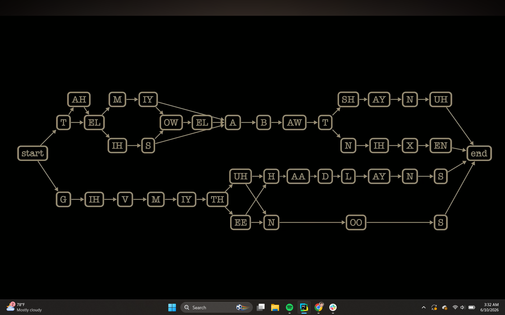
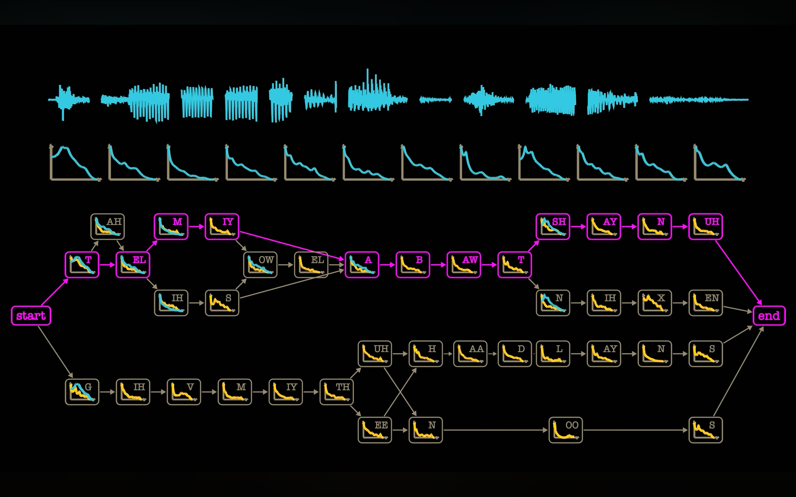
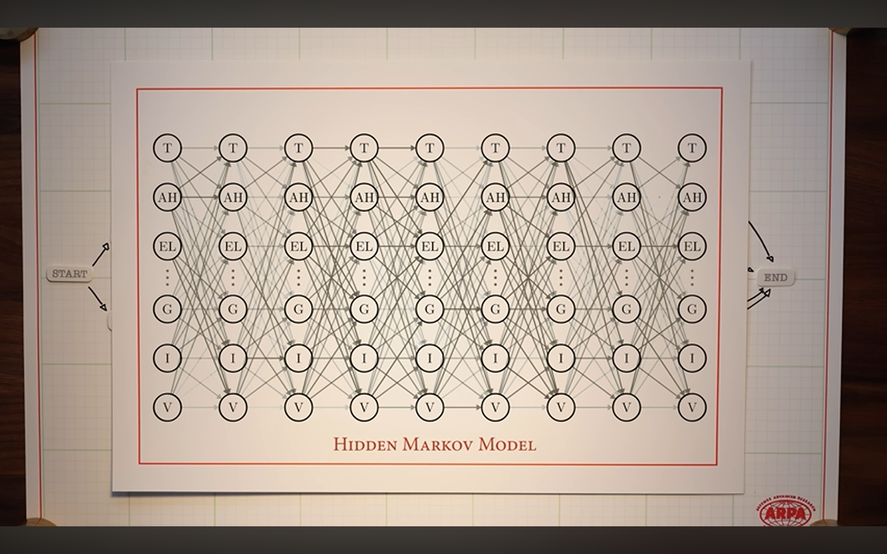
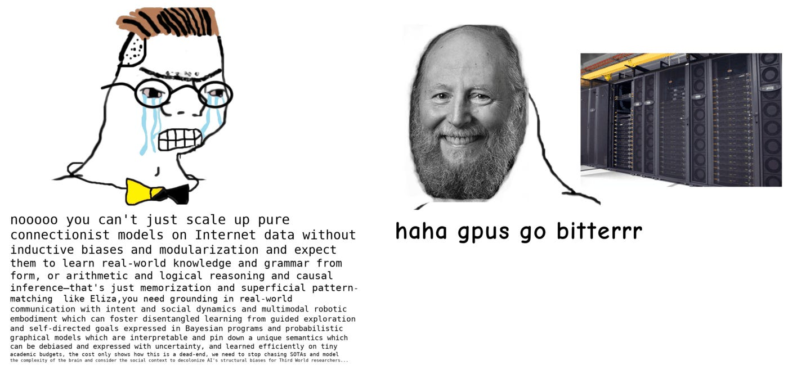
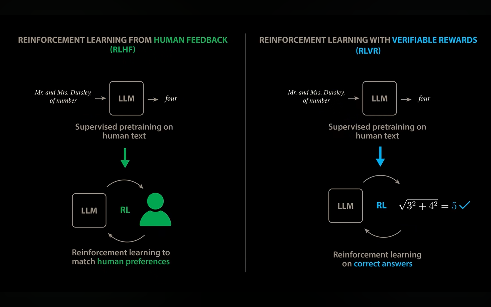
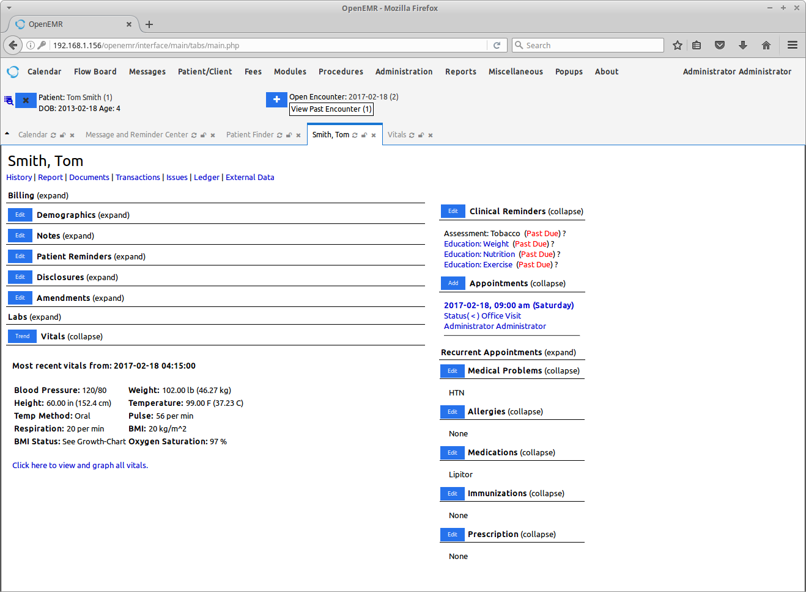

What if the agent system learned its own skills — instead of us baking them in?
add_idea()No weights, no gradients — the system learns by routing each new idea to the right skill.

export function RegisterPatient() { const [form, setForm] = useState(blank) return ( <Form onSubmit={save}> <Field name="name" /> <Field name="dob" type="date" /> </Form> ) }
export function RegisterPatient() { const [form, setForm] = useState(blank) return <Form onSubmit={save}>…</Form> }
const app = buildPatientRecords() // the running clone app.listen(3000)
add_idea()